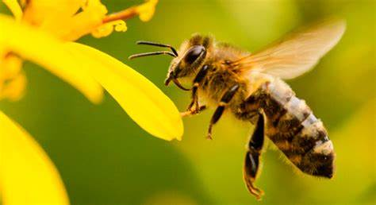
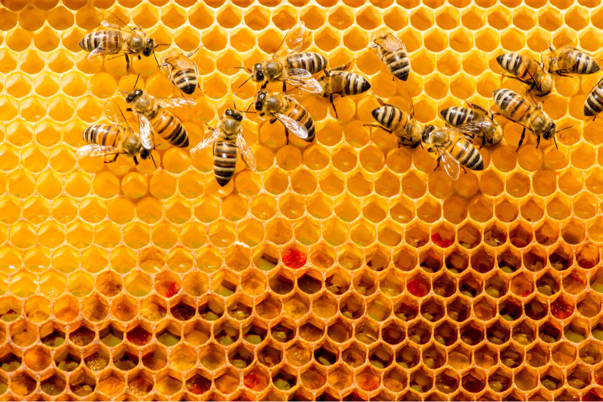

La abeja es el insecto volador conocido por producir la deliciosa miel consumida alrededor del mundo. Pertenece al orden Hymenoptera y a la superfamilia Apoidea. No obstante, la abeja no es una sola especie, sino que el género contiene cerca de 20.000 especies de abejas agrupadas en 9 familias, por lo que no todas las abejas producen la miel.
Caracteriticas de la abeja
El color de las abejas varía de acuerdo con su especie, pero las más conocidas son negras y tienen franjas amarillas que se sitúan de forma diferente en cada especie. Por ejemplo, la abeja melífera o europea (Apis mellifera) posee tonalidades doradas con líneas negras horizontales en la parte superior del cuerpo. Por su parte, la especie Anthidium florentinumtiene tiene las franjas solo en los costados de su cuerpo.
En general, las abejas tienen una estructura larga llamada probóscide, con la que pueden ingerir el néctar de las flores. En los machos, las antenas están compuestas por 13 segmentos y en las hembras están compuestas por 12. Todas las abejas cuentan con 2 pares de alas; el par posterior es el más pequeño. En algunas especies las alas son tan pequeñas que imposibilitan a la abeja el vuelo, pero eso no significa que estén desprovistas.
Pero si de características de las abejas se trata, no podemos dejar de mencionar una de las partes más representativas: el aguijón. El aguijón se llama ovipositor y forma parte de la reproducción de la abeja. Unida al aguijón se encuentra una bolsa que contiene veneno, pero solo las hembras pueden picar.
Por otro lado, el tamaño de las abejas es también variable. Para tener una idea, la especie de abeja más grande es la Megachile pluto, pues la hembra llega a medir 3,9 centímetros. La abeja más pequeña es Trigona minima, cuya longitud no supera los 0,21 centímetros.

Comportamiento de las abejas
La abeja es famosa por su comportamiento altamente organizado y enfocado en el trabajo. Forma colonias constituidas por miles de individuos y cada uno de ellos tiene una función por realizar. Cada colonia ocupa una colmena o panal y en cada una cohabitan 3 tipos de abeja: la reina, las obreras y los zánganos. La abeja reina es la única que puede poner huevos y su función es solamente reproductiva. Las obreras son hembras estériles y se encargan de limpiar el panal, recoger el polen y cuidar a las crías. Por su parte, los zánganos, que son todos machos, se encargan de aparearse con la reina.
Algunas especies de abejas son agresivas y el ser humano ha aprendido a temerles. Suele suceder que la abeja muere después de picar, pues el aguijón se queda en la piel del afectado junto con parte del abdomen.
Un hecho interesante en el comportamiento de las abejas melíferas es que sostienen una forma de comunicación descubierta en la década de los años 70 por el investigador Karl von Frisch. De acuerdo con este descubrimiento, la abeja realiza una especie de danza con el objetivo de compartir información sobre la ubicación de las flores. Las obreras regresan al panal y comienzan a danzar arriba y abajo por la pared vertical. La distancia hacia las flores depende de la duración del meneo y del número de agitaciones: mientras más lejos se encuentran las flores, más larga es la línea del meneo y más lento es el ritmo de las agitaciones.
Donde viven las abejas
La abeja está distribuida en todos los continentes con excepción de la Antártida. En cuanto al hábitat de las abejas, suele vivir en zonas con vegetación ricas en flores y habita los agujeros de los árboles o los panales construidos en comunidad.
Alimentación de las abejas
La dieta de la abeja consiste básicamente en polen y néctar de las flores. Las obreras colectan agua también para diluir la miel almacenada y preparar el alimento de las larvas. En las abejas productoras de miel, la jalea real es consumida por la que será reina. Por su parte, las abejas del género Trigona son las únicas que se alimentan de carroña.

Reproducción de las abejas
La abeja es un animal ovíparo y solo la reina puede aparearse y poner huevos. Una vez que un zángano logra copular con la hembra, esta deposita los huevos con su ovipositor. 4 días después se produce la eclosión y pequeñas larvas comienzan a vivir, cuidadas por las obreras.
La larva de abeja pasa por varias transformaciones antes de convertirse en abeja adulta, pero esto depende también de la especie.
Amenazas de la abeja
Desde el siglo pasado se ha visto una dramática reducción de las poblaciones de abejas silvestres, sobre todo en Estados Unidos. La apicultura también se ha visto afectada y, en general, el descenso se ha producido por la pérdida del hábitat natural a causa de la tala y la urbanización, así como por el uso de plaguicidas.
En 2010, varios científicos descubrieron que las abejas morían por un virus en su ADN y por un hongo presente en todas las colonias. Afortunadamente, algunas organizaciones se han preocupado por la vida de estos insectos y, de hecho, recientemente la Unión Europea anunció que tiene planes para restringir el uso de pesticidas que acaban con las abejas.
Si deseas leer más artículos parecidos a Abeja, te recomendamos que entres en nuestra categoría de Artrópodos.